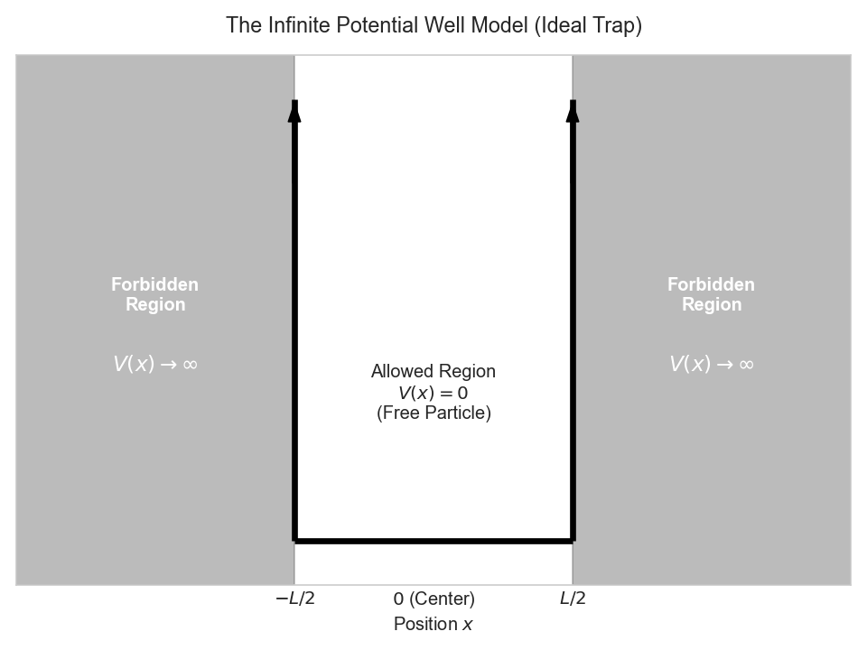
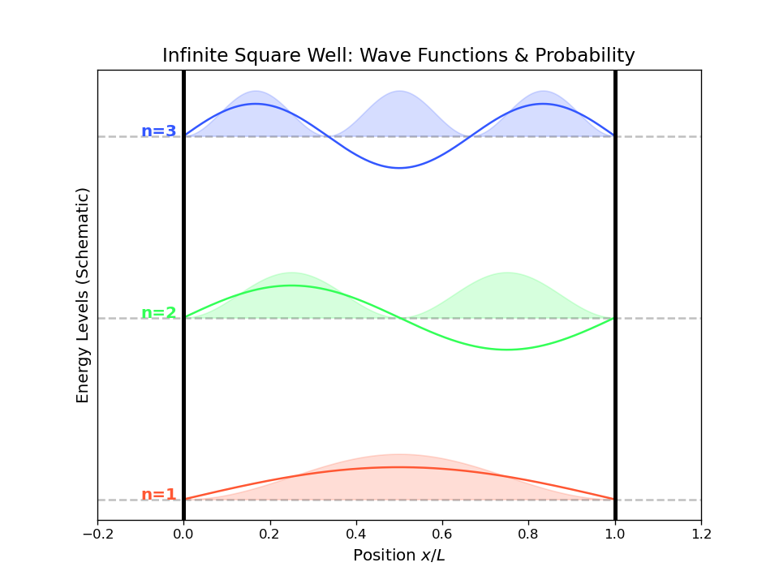
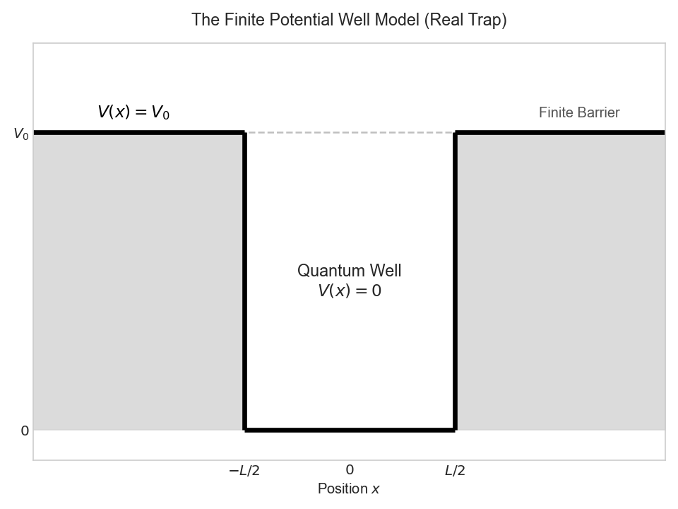
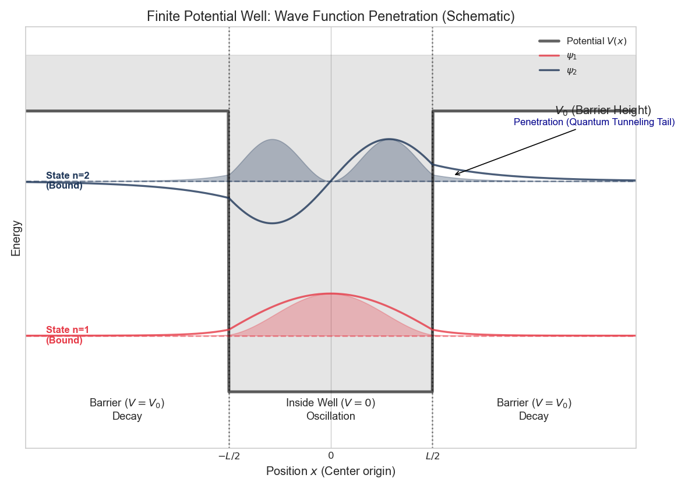

This article is actually used to prepare for test, but during the review, I realized how imperative quantum mechanics is, So I decided to summarize my notes in detail.
After Reading
1.Why do we only focus on the x-axis when deriving the wave function?
The fundamental reason is the absence of potential confinement (potential wells) in the y and z directions.
• In the x-direction: The electron is trapped by the potential well , creating “Standing Waves.” This leads to quantized energy levels (discrete states), which is the unique quantum phenomenon we need to solve for.
• In the y and z directions: There are no potential walls. The electron behaves like a Free Particle, traveling as “Traveling Waves.” Its energy is continuous and follows classical physics logic, so we don’t need to spend effort solving a complex Schrödinger equation for them.
2.Why is only the imaginary part taken when deriving the wavefunction?
First, our objective in this section is to derive$E = \frac{p^2}{2m}$，According to the de Broglie wave relations, we obtain:
$$E=\hbar \omega = \frac{(\hbar k)^2}{2m}$$
This means that the equation must reflect that $\omega$ (frequency) is proportional to $k^2$ (the square of the wavenumber).
If we use a real-valued wavefunction:
$$\Psi = \cos(kx - \omega t)$$
Corresponding to energy E：We need to take the derivative with respect to time $t$:
$$\frac{\partial \Psi}{\partial t} = \omega \sin(kx - \omega t)$$
Corresponding to kinetic energy ($p^2$)： We need to take the second derivative with respect to space $x$:
$$\frac{\partial^2 \Psi}{\partial x^2} = -k^2 \cos(kx - \omega t)$$
Regarding the de Broglie wave formula, the $sin$ on the left side is not always equal to the $cos$ on the right side. There is a phase difference, so energy conservation does not hold. Therefore, only $e^x$ can achieve this.
3.Why does the classical wave equation not apply to electrons?
It is because electrons and photons follow different Energy-Momentum Relations (Dispersion Relations).
classical wave equation:
$$\frac{\partial^2 \Psi}{\partial x^2} - \frac{1}{v^2} \frac{\partial^2 \Psi}{\partial t^2} = 0$$
It implies a mathematical relationship:
$$p^2 \propto E^2 \quad \text{or} \quad E \propto p$$
For photons (Light): $E = cp$. Energy and momentum have a linear relationship. Therefore, photons perfectly fit the classical equation. ($E^2 = c^2 p^2$)
For non-relativistic electrons, which have mass $m$, they follow Newton’s kinetic energy formula:
$$E = \frac{p^2}{2m}$$
This means that energy ($E$) is proportional to the square of momentum ($p^2$). When converted to derivatives, it becomes: the first-order time derivative ($\partial_t$) $\propto$ the second-order spatial derivative ($\partial_{xx}$), which is a contradiction.
The conclusion is that the classical wave equation describes massless, non-dispersive waves (with a constant wave speed). However, electron waves are massive and dispersive (their wave speed changes with wavelength), so a new equation — the Schrödinger equation (with a first-order derivative on the left and a second-order derivative on the right) — must be used.
Introduce
One of the most straightforward reasons why we need to use quantum mechanics in engineering research is that Moore’s Law has reached its limit. Moore’s Law states that the number of transistors on an integrated circuit doubles every 18 to 24 months, and chip performance surges accordingly. However, the reason this law has been able to persist for decades is that transistors have been made smaller and smaller. From the early micrometer scale, transistors in current mobile phones and FPGAs have shrunk to 3 nanometers, 2 nanometers, and are even approaching 1 nanometer. At this point, it is no longer feasible to ignore quantum properties, which is why quantum mechanics is necessary.
The Failure of Classical Physics & Duality
The Limitations of Classical Physics
The applicability of classical mechanics is limited when there are high-speed motions, microscopic scales, or extreme conditions. First, when the speed of an object approaches the speed of light, the law of velocity addition and the law of momentum in classical mechanics will fail. Second, when studying objects at the microscopic scale, such as atoms, molecules, and particles, the macroscopic approximations of classical mechanics are no longer applicable. At the microscopic scale, there are quantum mechanical effects, such as wave-particle duality and the uncertainty principle, which cannot be explained by the framework of classical mechanics.
Wave-Particle Duality
Wave Nature of Light
The wave nature of light is derived from numerous experimental observations, not only Young’s double-slit interference experiment, but also the diffraction experiment of light, the polarization experiment of light, and so on. Based on the achievements of predecessors, there are the following formulas:
Maxwell’s Equations for Light:
$$c=f\lambda$$ $c$: velocity of light
$f$: frequency
$\lambda$: wavelength
The particle nature of light
The particle nature of light is also derived from numerous experimental observations, including the Compton effect. The particle nature of light is manifested in energy E and momentum p, with the following formulas:
The energy level of a photon:
$$E=hf=h\frac{c}{\lambda}=h\frac{\omega}{2\pi}=\hbar\omega$$
$h$ :Planck constant
$\hbar$ :The reduced Planck constant, numerically equal to the Planck constant divided by $2\pi$, that is, $\hbar=\frac{h}{2\pi}$
The kinetic energy of a photon:
$$p=\frac{h}{\lambda}=h\frac{k}{2\pi}=\hbar k$$
$k$: The number of complete vibrations of a light wave within a space of length $2\pi$
Wave-Particle Duality of Electrons
De Broglie Waves
Refer to the momentum equation of light $p=\frac{h}{\lambda}$
$$\lambda=\frac{h}{p}=\frac{h}{mv}$$
$m$: mass
$v$: velocity
Copenhagen Interpretation
- The quantum state of a quantum system can be fully described by a wave function. The wave function represents all the information an observer has about the quantum system.
- The description of a quantum system is probabilistic. The probability of an event is the square of the absolute value of the wave function.
- The uncertainty principle states that in a quantum system, the position and momentum of a particle cannot be determined simultaneously.
The Wave Function
Derivation of the one-dimensional wave function
According to Euler’s Formula
$$e^{ix}=cos(x)+isin(x)$$
We can describe the wave propagating along the x-axis using the following formula.
$$\Psi(x,t)=Acos(k(x-vt)+\theta_0)$$
Here, based on this deduction
$$v=f\lambda=\frac{\omega}{2\pi} \cdot \frac{2\pi}{k}=\frac{\omega}{k}$$
Combined with Euler’s formula, it is found that what is actually being calculated is the real part.
$$\Psi(x,t)=Acos(kx-\omega t+\theta_0)=\mathrm{Re}[Ae^{i(kx-\omega t+\theta_0)}]$$
Omitting the real part operation, here $Ae^{i\theta_0}$ is the complex amplitude. After replacing it with $\widetilde{A}$, the wave function is obtained.
$$ \Psi(x,t)=\widetilde{A}e^{i(kx-\omega t)}$$
Born’s Statistical Interpretation (Probability Density) Normalization Condition
Born’s Statistical Interpretation
This part is very interesting. First, we need to clarify what the Ψ we just derived is. Max Born put forward a bold hypothesis in 1926, which also earned him the Nobel Prize.
Core concept: itself has no direct physical meaning (you cannot measure it), but its modulus squared represents the probability density of a particle appearing at a certain location. $$P(x, t) = |\Psi(x, t)|^2 = \Psi^*(x, t) \cdot \Psi(x, t)$$
Maybe someone has found something interesting…（Tips:Correlation）
Normalization Condition
Since $|\Psi|^2$ represents the probability density, this leads to a logical necessity: the electron must exist somewhere in the universe. If we search for this electron along the entire x-axis, the total probability of finding it must be 100% (i.e., 1).
$$\int_{-\infty}^{+\infty} |\Psi(x, t)|^2 \ dx = 1$$
Maybe someone has found something interesting…（Tips:Dirac delta function）
Normalization is the only tool used to calculate $\widetilde{A}$. Without normalization, our equation would only be a proportion, not an accurate prediction.
Classical Wave Equation(d’Alembert Equation)
Starting from the wave function, take the second derivative with respect to x and t respectively to obtain the formula:
$$\frac{\partial^2 \Psi}{\partial x^2} = (ik)^2 \Psi = -k^2 \Psi$$
$$\frac{\partial^2 \Psi}{\partial t^2} = (-i\omega)^2 \Psi = -\omega^2 \Psi$$
Using the previously derived formula ( v = \frac{\omega}{k} ), we can obtain ( k^2 = \frac{\omega^2}{v^2} ). Substituting this into the above second equation gives the classical wave equation:
$$（\frac{\partial^2}{\partial x^2} - \frac{1}{v^2} \frac{\partial^2}{\partial t^2} ）\Psi(x,t)= 0$$
The significance of this equation is: any light (electromagnetic wave) propagating in a vacuum must strictly obey this law.
Electrons cannot use this equation
The Schrödinger Equation
Derivation
We start with the conservation of energy (kinetic energy plus potential energy):
$$E=K(t)+V(t)=\frac{p^2}{2m}+V(t)$$
Here, two operators (the calculation process) are introduced:
$$\hat{p} = -i\hbar \frac{\partial}{\partial x}$$
$$\hat{E} = i\hbar \frac{\partial}{\partial t}$$
Both sides process $\Psi(x,t)$ simultaneously:
$$[-\frac{\hbar^2}{2m}\frac{\partial^2}{\partial x^2}+V(t)]\Psi(x,t)=i\hbar\frac{\partial}{\partial t}\Psi(x,t)$$
Substitute the Hamiltonian operator $\hat{H}$:
$$\hat{H}\Psi(x,t)=i\hbar\frac{\partial}{\partial t}\Psi(x,t)$$
Time-Dependent Schrödinger Equation
Starting from here:
$$\hat{H}\Psi(x,t)=i\hbar\frac{\partial}{\partial t}\Psi(x,t)$$
First, perform a parametric separation of the wave function:
$$\Psi(x,t)=\psi(x)f(t)$$
Substitute back into the original formula:
$$\frac{1}{\psi(x)} \left[ -\frac{\hbar^2}{2m} \frac{d^2 \psi(x)}{dx^2} \right] + V(x) = \frac{i\hbar}{f(t)} \frac{df(t)}{dt}=E$$
Or using the Hamiltonian operator $\hat{H}$:
$$\frac{\hat{H}\psi(x)}{\psi(x)}=\frac{i\hbar}{f(t)}\frac{df(t)}{dt}$$
The meaning here is that the left side of the equal sign is only related to the space x, the right side is only related to the time t, and both are equal to the constant $E$.
Time-Independent Schrödinger Equation
This follows the time-dependent Schrödinger equation:
$$\frac{1}{\psi(x)} \left[ -\frac{\hbar^2}{2m} \frac{d^2 \psi(x)}{dx^2} \right] + V(x) = \frac{i\hbar}{f(t)} \frac{df(t)}{dt}=E$$
Multiply both sides by $\psi(x)$:
$$-\frac{\hbar^2}{2m} \frac{d^2 \psi(x)}{dx^2} + V(x)\psi(x)=E\psi(x)$$
Handle it:
$$\psi(x) \left[ -\frac{\hbar^2}{2m} \frac{d^2}{dx^2}+V(x) \right]=E\psi(x)$$
Substitute into the Hamiltonian operator $\hat{H}$:
$$\hat{H}\psi=E\psi$$
Quantum Well (Practical Application of Schrödinger Equation)
Infinite Barrier
Infinite Square Potential Well Diagram

First, let’s establish the simplest model. Imagine an electron trapped in a box with a width of $L$, where the walls are infinitely high, and the electron can never escape.
Inside the well ($0 < x < L$): $V(x) = 0$ (the electron flies freely).
Outside the well (other regions): $V(x) = \infty$ (the electron can never reach there, with a probability of 0).
The calculation is as follows:
First, since the potential energy does not change with time, we use the time-independent Schrödinger equation: $\hat{H}\psi=E\psi$. Also, because $V(x)=0$ in the L region, we obtain the following equation: $$-\frac{\hbar^2}{2m} \frac{d^2 \psi}{dx^2} = E \psi$$
Sorted out as:
$$\frac{d^2 \psi}{dx^2} + \frac{2mE}{\hbar^2} \psi = 0$$
Reviewing the previous derivation $E=\frac{p^2}{2m}$, substituting $p=i\hbar$ gives the Helmholtz Equation
$$\frac{d^2 \psi}{dx^2} + k^2 \psi = 0$$
At a glance, it’s a differential equation, and the solution is:
$$\psi(x) = A \sin(kx) + B \cos(kx)$$
Next are the boundary conditions, because it’s impossible to be on the wall:
$$\psi(0)=B=0$$
$$\psi(L)=Asin(kx)=0$$
This means that $kL = n\pi \quad (n = 1, 2, 3, \dots)$
Next, we investigate the normalization condition. The wave function outside the potential well is 0, so it can be simplified to:
$$\int_{0}^{L} |\psi(x)|^2 \ dx = 1$$
Substitute $\psi(x) = A\sin\left(\frac{nx\pi}{L}\right)$
$$A^2 \int_{0}^{L} \sin^2\left( \frac{n\pi x}{L} \right) \ dx = 1$$
By power reduction, solving the equation gives:
$$A^2 = \frac{2}{L} \implies A = \sqrt{\frac{2}{L}}$$
The normalized wave function:
$$\psi_n(x) = \sqrt{\frac{2}{L}} \sin\left( \frac{n\pi x}{L} \right)$$
$$E_n = \frac{\hbar^2 k^2}{2m} = \frac{n^2 \pi^2 \hbar^2}{2m L^2}$$
python simulation
Code
import numpy as np
import matplotlib.pyplot as plt
# --- 1. 物理参数设定 ---
L = 1.0 # 势井宽度 (比如 1nm)
x = np.linspace(0, L, 1000) # 在 0 到 L 之间生成 1000 个点
# --- 2. 定义波函数 ---
# 公式: psi = sqrt(2/L) * sin(n * pi * x / L)
def get_psi(n, x, L):
return np.sqrt(2/L) * np.sin(n * np.pi * x / L)
# --- 3. 绘图设置 ---
plt.figure(figsize=(8, 6), dpi=120) # 设置画布大小和清晰度
plt.title("Infinite Square Well: Wave Functions & Probability", fontsize=14)
plt.xlabel("Position $x/L$", fontsize=12)
plt.ylabel("Energy Levels (Schematic)", fontsize=12)
# 为了美观，我们设定一些颜色
colors = ['#FF5733', '#33FF57', '#3357FF'] # 红、绿、蓝
levels = [1, 2, 3] # 我们画前三个能级
# --- 4. 循环画出 n=1, 2, 3 ---
for i, n in enumerate(levels):
# 计算波函数
psi = get_psi(n, x, L)
# 计算概率密度 |psi|^2
prob = psi**2
# 设定一个基准高度，代表能量 E_n
# 为了显示清楚，我们人工拉开间距，不完全按 n^2 比例，否则 n=1 会被压扁
energy_level = n * 40
# 画基准线 (虚线)
plt.axhline(y=energy_level, color='gray', linestyle='--', alpha=0.5)
plt.text(-0.1, energy_level, f'n={n}', color=colors[i], fontweight='bold', fontsize=12)
# 画波函数 (实线) - 这里的 + energy_level 是为了把它平移上去
# 乘以 5 是为了放大波幅，让它在图上看得更清楚
plt.plot(x, psi * 5 + energy_level, color=colors[i], label=f'$\psi_{n}(x)$')
# 画概率密度 (填充颜色)
# fill_between(x轴, 下限, 上限)
plt.fill_between(x, energy_level, (prob * 5) + energy_level,
color=colors[i], alpha=0.2, label=f'$|\psi_{n}|^2$ Probability')
# --- 5. 画势井的墙壁 ---
plt.axvline(0, color='black', linewidth=3)
plt.axvline(L, color='black', linewidth=3)
plt.text(0, 0, 'V = $\infty$', ha='right', va='bottom', fontsize=12)
plt.text(L, 0, 'V = $\infty$', ha='left', va='bottom', fontsize=12)
# 隐藏 Y 轴刻度 (因为是示意图)
plt.yticks([])
plt.xlim(-0.2, 1.2) # 留一点边距
# 导出建议: plt.savefig('quantum_well.png')
plt.show()
matplotlib output
无限深势阱的能量图

1. The area of the shadow is the probability.
2. The position of the point where the wave function crosses 0: the probability is 0, and the presence of positive and negative values is due to the occurrence of the tunneling effect.
finite-depth potential well
Finite Square Potential Well Diagram

Similarly, according to the above diagram
$$ V(x) = \begin{cases} 0, & |x| < \frac{L}{2} \\ V_0, & \text{otherwise} \end{cases} $$
We need to divide into three domains: domain 1 ($x<-\frac{L}{2}$), domain 2 ($-\frac{L}{2}<x<\frac{L}{2}$), and domain 3 ($x>\frac{L}{2}$).
First, let’s analyze domain 2 ($-\frac{L}{2}<x<\frac{L}{2}$), which is similar to an infinite potential well:
$$\psi’’ + k^2\psi = 0$$
The general solution in mathematics is:
$$\psi_{II}(x) = A_2\cos(kx) +B_2\sin(kx)$$
Domain 1 ($x < -\frac{L}{2}$):
$$\psi’’ - \kappa^2\psi = 0$$
The general solution in mathematics is:
$$\psi_I(x) = A_1e^{\kappa x} + B_1e^{-\kappa x}$$
Physical Constraints: When $x \to -\infty$, $e^{-\kappa x}$ becomes infinite (physically not allowed).
The final solution is:
$$\psi_I(x) = A_1e^{\kappa x}$$
Domain 3 ($x>\frac{L}{2}$):
$$\psi’’ - \kappa^2\psi = 0$$
The mathematical general solution is:
$$\psi_{III}(x) = A_3e^{\kappa x} + B_3e^{-\kappa x}$$
Physical screening: As $x \to +\infty$, $e^{\kappa x}$ becomes infinite. The final solution is:
$$\psi_{III}(x) = B_3e^{-\kappa x}$$
Boundary conditions (the wave functions are the same at the boundary) can solve the transcendental functions, and thus solve for energy and probability:
$$k \tan(kL/2) = \kappa$$
python simulation
Code
import numpy as np
import matplotlib.pyplot as plt
# --- 1. 设定示意性参数 ---
L = 2.0 # 井宽 (示意值，比如 2nm，从 -1 到 1)
V0 = 10.0 # 墙高 (示意值)
x = np.linspace(-L*1.5, L*1.5, 1000) # 画宽一点，展示墙外
# 定义区域
inside_mask = np.abs(x) <= L/2
outside_mask = np.abs(x) > L/2
# --- 2. 构造示意性波函数 (非精确解，仅做视觉展示) ---
# 我们需要手动调整 k (波数) 和 kappa (衰减系数) 来让图看起来像真的
# 关键点：能量越高(n越大)，kappa越小(衰减越慢，渗透越深)
def get_schematic_psi(n, x, L):
psi = np.zeros_like(x)
# --- 手动调参区 (Magic Numbers for visuals) ---
if n == 1: # 基态 (偶对称 cos)
E_schematic = 2.0
k = np.pi / (L * 1.1) # 波长比无限井稍微长一点点
kappa = 3.5 # 衰减较快
# 井内
psi[inside_mask] = np.cos(k * x[inside_mask])
# 边界值 (用于缝合)
boundary_val = np.cos(k * L/2)
# 井外 (指数衰减)
psi[outside_mask] = boundary_val * np.exp(-kappa * (np.abs(x[outside_mask]) - L/2))
elif n == 2: # 第一激发态 (奇对称 sin)
E_schematic = 7.5
k = 2 * np.pi / (L * 1.15)
kappa = 1.5 # 能量高了，衰减变慢了 (渗透更深!)
# 井内
psi[inside_mask] = np.sin(k * x[inside_mask])
# 边界值
boundary_val = np.sin(k * L/2)
# 井外 (指数衰减，注意要乘 sign(x) 保持奇对称)
psi[outside_mask] = boundary_val * np.exp(-kappa * (np.abs(x[outside_mask]) - L/2)) * np.sign(x[outside_mask])
# 归一化视觉幅度
psi = psi / np.max(np.abs(psi))
return psi, E_schematic
# --- 3. 绘图设置 ---
plt.figure(figsize=(10, 7), dpi=120)
plt.style.use('seaborn-v0_8-whitegrid')
# 画势阱 V(x) 的轮廓
V_x = np.zeros_like(x)
V_x[outside_mask] = V0
plt.plot(x, V_x, color='black', linewidth=3, alpha=0.6, label='Potential $V(x)$')
plt.fill_between(x, V_x, V0+2, color='gray', alpha=0.2) # 给墙壁上色
# --- 4. 循环画出能级 n=1, n=2 ---
colors = ['#E63946', '#1D3557'] # 红、蓝
states = [1, 2]
for i, n in enumerate(states):
psi, E_level = get_schematic_psi(n, x, L)
prob = psi**2
# 画能级基准线
plt.axhline(E_level, color=colors[i], linestyle='--', alpha=0.5)
plt.text(-L*1.4, E_level, f'State n={n}\n(Bound)', color=colors[i], va='center', fontweight='bold')
# 画波函数 (稍微放大一点平移到能级上)
scale_factor = 1.5
plt.plot(x, psi * scale_factor + E_level, color=colors[i], linewidth=2, alpha=0.8, label=f'$\psi_{n}$')
# 画概率密度 (重点展示渗透！)
plt.fill_between(x, E_level, prob * scale_factor + E_level, color=colors[i], alpha=0.3)
# --- 5. 装饰图表 ---
# 标出关键区域
plt.axvline(-L/2, color='black', linestyle=':', alpha=0.5)
plt.axvline(L/2, color='black', linestyle=':', alpha=0.5)
plt.text(0, -1, 'Inside Well ($V=0$)\nOscillation', ha='center', fontsize=11)
plt.text(-L, -1, 'Barrier ($V=V_0$)\nDecay', ha='center', fontsize=11)
plt.text(L, -1, 'Barrier ($V=V_0$)\nDecay', ha='center', fontsize=11)
# 标注 V0
plt.text(L*1.1, V0, '$V_0$ (Barrier Height)', va='center', fontsize=12)
# 重点：标注渗透现象
plt.annotate('Penetration (Quantum Tunneling Tail)',
xy=(L/2 + 0.2, E_level + 0.2),
xytext=(L/2 + 0.8, E_level + 2),
arrowprops=dict(facecolor='black', arrowstyle='->'),
fontsize=10, color='darkblue')
plt.title('Finite Potential Well: Wave Function Penetration (Schematic)', fontsize=14)
plt.xlabel('Position $x$ (Center origin)', fontsize=12)
plt.ylabel('Energy', fontsize=12)
plt.yticks([]) # 隐藏Y轴刻度
plt.xticks([-L/2, 0, L/2], ['$-L/2$', '$0$', '$L/2$']) # 设置X轴刻度
plt.xlim(-L*1.5, L*1.5)
plt.ylim(-2, V0 + 3)
plt.legend(loc='upper right')
plt.tight_layout()
plt.show()
# plt.savefig('finite_well_schematic.png')
matplotlib output
有限深势阱的能量图

1. Compare (low energy, red) and (high energy, blue). It will be found that the blue tail decays more slowly and extends farther. This is quite intuitive: the higher the electron energy, the more 'restless' it is, and the deeper it penetrates into the wall.
2. Look at these colored shadows extending into the wall! In classical physics, this is an absolute forbidden zone. However, in quantum mechanics, the wave function does not suddenly cut off at the boundary but decays exponentially. This proves that electrons have a certain probability of existing inside the potential barrier. This is the fundamental reason for the 'tunneling effect'.
Conclusion & Uncertainty Principle
Heisenberg Uncertainty Principle
Before concluding the first note, we must confront the most fundamental and counterintuitive principle in quantum mechanics—the Heisenberg Uncertainty Principle.
When we calculated the infinite potential well, why can the quantum number $n$ not be equal to 0? If $n = 0$, then $E = 0$ and momentum $p = 0$, which means the electron is stationary. In classical mechanics, it is perfectly reasonable to place a ball at the bottom of a box without moving it. But in quantum mechanics, this is forbidden. This is because the uncertainty principle states: we cannot precisely know both the position ($x$) and momentum ($p$) of a particle simultaneously.
$$\sigma_x \sigma_p \geq \frac{\hbar}{2}$$
$\sigma_x$: Standard deviation (uncertainty) of position
$\sigma_p$: Standard deviation of momentum
It can also be understood from the perspective of Fourier transform, which tells us that the narrower a signal is in the time domain (the more certain the position), the wider it must be in the frequency domain (the more uncertain the momentum). If you tightly confine an electron in an extremely small potential well $L$ (with a very small $\sigma_x$), the range of its momentum distribution $\sigma_p$ will increase dramatically, resulting in extremely high kinetic energy. This is why zero-point energy must exist—electrons are forced to fluctuate to satisfy the uncertainty principle.
So what does this mean for us? It means we have a means of control: by adjusting the width $L$ of the potential well (changing the material thickness), we can precisely control the energy levels $E_n$ of electrons (changing the color of the emitted light). This is the principle behind quantum well lasers.